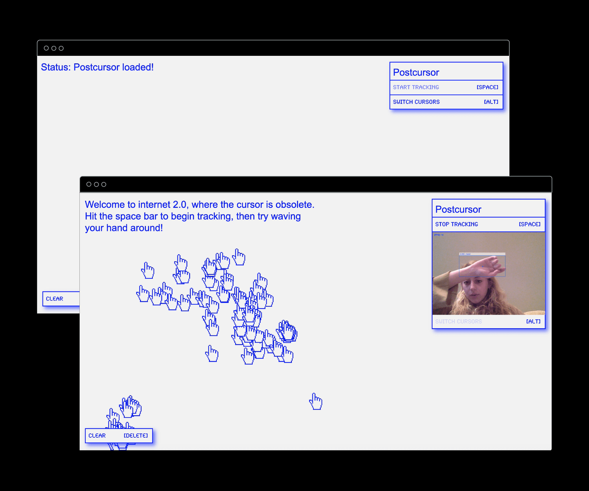
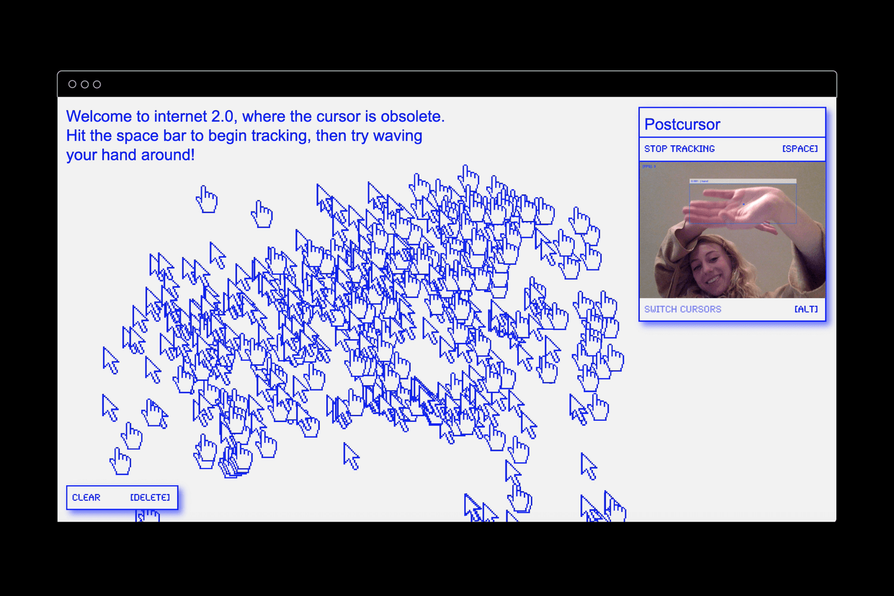
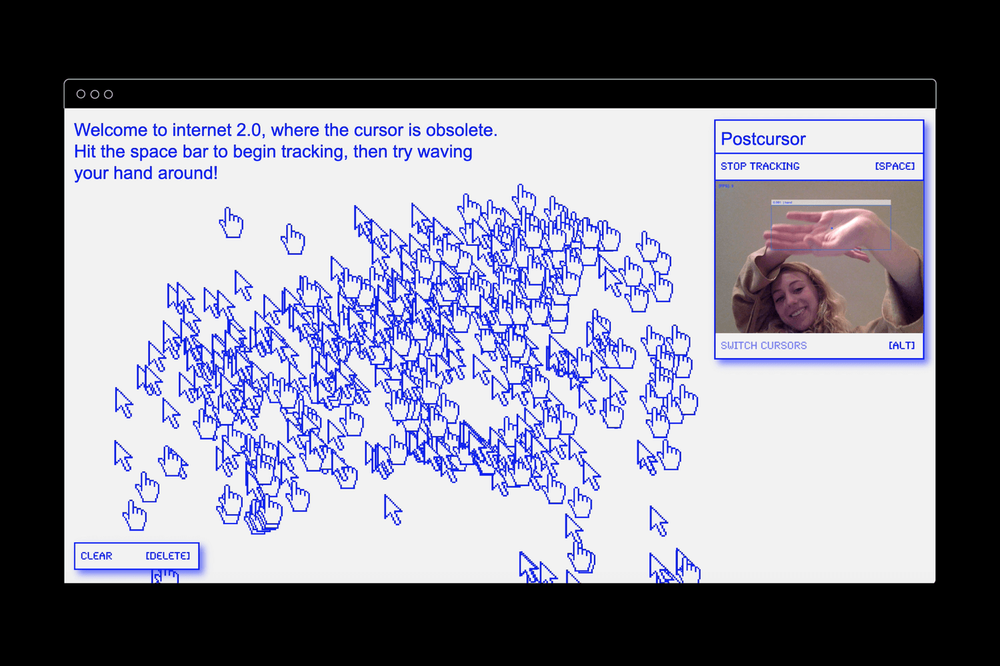

Postcursor / Starrynite2020
Postcursor is a microsite built according to the principles of relational design. The site uses machine learning to generate graphics according to users’ hand movements, exploring the notion of process-as-product.
Models used:
tensorflow.js & handtrack.js
 
